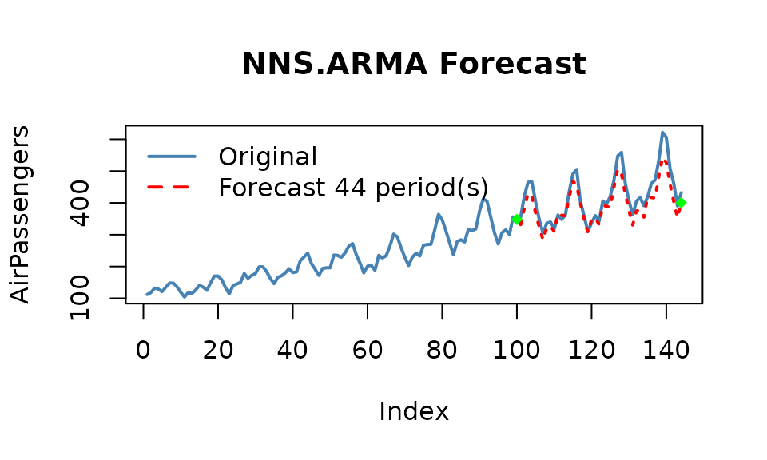
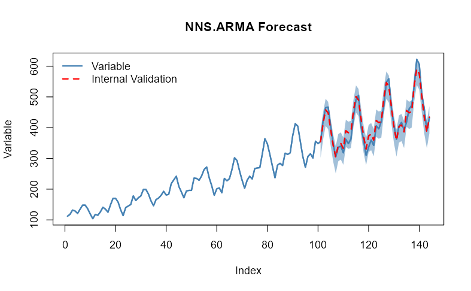
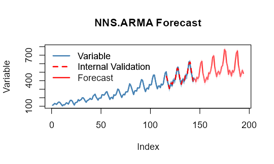

Getting Started with NNS: Forecasting
Fred Viole
Source:vignettes/NNSvignette_Forecasting.Rmd
NNSvignette_Forecasting.RmdForecasting
The underlying assumptions of traditional autoregressive models are well known. The resulting complexity with these models leads to observations such as,
``We have found that choosing the wrong model or parameters can often yield poor results, and it is unlikely that even experienced analysts can choose the correct model and parameters efficiently given this array of choices.’’
NNS simplifies the forecasting process. Below are some
examples demonstrating NNS.ARMA and its
assumption free, minimal parameter forecasting
method.
Linear Regression
NNS.ARMA has the ability to fit a
linear regression to the relevant component series, yielding very fast
results. For our running example we will use the
AirPassengers dataset loaded in base R.
We will forecast 44 periods h = 44 of
AirPassengers using the first 100 observations
training.set = 100, returning estimates of the final 44
observations. We will then test this against our validation set of
tail(AirPassengers,44).
Since this is monthly data, we will try a
seasonal.factor = 12.
Below is the linear fit and associated root mean squared error (RMSE)
using method = "lin".
nns_lin = NNS.ARMA(AirPassengers,
h = 44,
training.set = 100,
method = "lin",
plot = TRUE,
seasonal.factor = 12,
seasonal.plot = FALSE)
## [1] 35.39965Nonlinear Regression
Now we can try using a nonlinear regression on the relevant component
series using method = "nonlin".
Cross-Validation
We can test a series of seasonal.factors and select the
best one to fit. The largest period to consider would be
0.5 * length(variable), since we need more than 2 points
for a regression! Remember, we are testing the first 100 observations of
AirPassengers, not the full 144 observations.
seas = t(sapply(1 : 25, function(i) c(i, sqrt( mean( (NNS.ARMA(AirPassengers, h = 44, training.set = 100, method = "lin", seasonal.factor = i, plot=FALSE) - tail(AirPassengers, 44)) ^ 2) ) ) ) )
colnames(seas) = c("Period", "RMSE")
seas## Period RMSE
## [1,] 1 75.67783
## [2,] 2 75.71250
## [3,] 3 75.87604
## [4,] 4 75.16563
## [5,] 5 76.07418
## [6,] 6 70.43185
## [7,] 7 77.98493
## [8,] 8 75.48997
## [9,] 9 79.16378
## [10,] 10 81.47260
## [11,] 11 106.56886
## [12,] 12 35.39965
## [13,] 13 90.98265
## [14,] 14 95.64979
## [15,] 15 82.05345
## [16,] 16 74.63052
## [17,] 17 87.54036
## [18,] 18 74.90881
## [19,] 19 96.96011
## [20,] 20 88.75015
## [21,] 21 100.21346
## [22,] 22 108.68674
## [23,] 23 85.06430
## [24,] 24 35.49018
## [25,] 25 75.16192Now we know seasonal.factor = 12 is our best fit, we can
see if there’s any benefit from using a nonlinear regression.
Alternatively, we can define our best fit as the corresponding
seas$Period entry of the minimum value in our
seas$RMSE column.
a = seas[which.min(seas[ , 2]), 1]Below you will notice the use of seasonal.factor = a
generates the same output.
nns = NNS.ARMA(AirPassengers,
h = 44,
training.set = 100,
method = "nonlin",
seasonal.factor = a,
plot = TRUE, seasonal.plot = FALSE)
## [1] 18.1809Note: You may experience instances with monthly data
that report seasonal.factor close to multiples of 3, 4, 6
or 12. For instance, if the reported
seasonal.factor = {37, 47, 71, 73} use
(seasonal.factor = c(36, 48, 72)) by setting the
modulo parameter in
NNS.seas(..., modulo = 12). The same
suggestion holds for daily data and multiples of 7, or any other time
series with logically inferred cyclical patterns. The nearest periods to
that modulo will be in the expanded output.
NNS.seas(AirPassengers, modulo = 12, plot = FALSE)## $all.periods
## Period Coefficient.of.Variation Variable.Coefficient.of.Variation
## 1 48 0.4002249 0.4279947
## 2 12 0.4059923 0.4279947
## 3 24 0.4279947 0.4279947
## 4 36 0.4279947 0.4279947
## 5 60 0.4279947 0.4279947
##
## $best.period
## [1] 48
##
## $periods
## [1] 48 12 24 36 60Cross-Validating All Combinations of
seasonal.factor
NNS also offers a wrapper function
NNS.ARMA.optim() to test a given vector of
seasonal.factor and returns the optimized objective
function (in this case RMSE written as
obj.fn = expression( sqrt(mean((predicted - actual)^2)) ))
and the corresponding periods, as well as the
NNS.ARMA regression method used.
Alternatively, using external package objective functions work as well
such as
obj.fn = expression(Metrics::rmse(actual, predicted)).
NNS.ARMA.optim() will also test whether
to regress the underlying data first, shrink the estimates
to their subset mean values, include a bias.shift based on
its internal validation errors, and compare different
weights of both linear and nonlinear estimates.
Given our monthly dataset, we will try multiple years by setting
seasonal.factor = seq(12, 60, 6) every 6 months based on
our NNS.seas() insights above.
nns.optimal = NNS.ARMA.optim(AirPassengers,
training.set = 100,
seasonal.factor = seq(12, 60, 6),
obj.fn = expression( sqrt(mean((predicted - actual)^2)) ),
objective = "min",
pred.int = .95, plot = TRUE)
nns.optimal[1] "CURRNET METHOD: lin"
[1] "COPY LATEST PARAMETERS DIRECTLY FOR NNS.ARMA() IF ERROR:"
[1] "NNS.ARMA(... method = 'lin' , seasonal.factor = c( 12 ) ...)"
[1] "CURRENT lin OBJECTIVE FUNCTION = 35.3996540135277"
[1] "BEST method = 'lin', seasonal.factor = c( 12 )"
[1] "BEST lin OBJECTIVE FUNCTION = 35.3996540135277"
[1] "CURRNET METHOD: nonlin"
[1] "COPY LATEST PARAMETERS DIRECTLY FOR NNS.ARMA() IF ERROR:"
[1] "NNS.ARMA(... method = 'nonlin' , seasonal.factor = c( 12 ) ...)"
[1] "CURRENT nonlin OBJECTIVE FUNCTION = 18.1809033101955"
[1] "BEST method = 'nonlin' PATH MEMBER = c( 12 )"
[1] "BEST nonlin OBJECTIVE FUNCTION = 18.1809033101955"
[1] "CURRNET METHOD: both"
[1] "COPY LATEST PARAMETERS DIRECTLY FOR NNS.ARMA() IF ERROR:"
[1] "NNS.ARMA(... method = 'both' , seasonal.factor = c( 12 ) ...)"
[1] "CURRENT both OBJECTIVE FUNCTION = 22.7363330823967"
[1] "BEST method = 'both' PATH MEMBER = c( 12 )"
[1] "BEST both OBJECTIVE FUNCTION = 22.7363330823967"
>
> nns.optimal
$periods
[1] 12
$weights
NULL
$obj.fn
[1] 18.1809
$method
[1] "nonlin"
$shrink
[1] FALSE
$nns.regress
[1] FALSE
$bias.shift
[1] 0
$errors
[1] -6.0626221 -10.8434613 -10.7646998 -22.7134790 -15.3519569 -12.9673866 -9.1626428 3.9393939 7.4882812 12.3750000 29.1132812 34.3281250 19.7002739
[14] 20.0656989 11.8833952 -15.1389735 24.1108241 7.4289721 15.2385271 38.3826941 19.2903993 17.4644272 19.3331767 19.8155057 -4.0856291 26.3260739
[27] 2.6153110 -24.3491085 3.9057436 -8.8271346 -7.9236143 5.9867956 -3.9068174 -0.7986170 42.1995863 -10.1324609 -20.0852820 8.6573328 -21.3067790
[40] -24.3403514 -0.6332912 -29.8418247 -5.8572216 14.8998761
$results
[1] 348.9374 411.1565 454.2353 444.2865 388.6480 334.0326 295.8374 339.9394 347.4883 330.3750 391.1133 382.3281 382.7003 455.0657 502.8834 489.8610 428.1108
[18] 366.4290 325.2385 375.3827 379.2904 359.4644 425.3332 415.8155 415.9144 498.3261 550.6153 534.6509 466.9057 398.1729 354.0764 410.9868 413.0932 390.2014
[35] 461.1996 450.8675 451.9147 543.6573 600.6932 581.6596 507.3667 431.1582 384.1428 446.8999
$lower.pred.int
[1] 310.8588 373.0779 416.1567 406.2079 350.5694 295.9540 257.7588 301.8608 309.4097 292.2964 353.0347 344.2495 344.6217 416.9871 464.8048 451.7824 390.0322
[18] 328.3504 287.1599 337.3041 341.2118 321.3858 387.2546 377.7369 377.8358 460.2475 512.5367 496.5723 428.8271 360.0943 315.9978 372.9082 375.0146 352.1228
[35] 423.1210 412.7889 413.8361 505.5787 562.6146 543.5810 469.2881 393.0796 346.0642 408.8213
$upper.pred.int
[1] 387.0160 449.2351 492.3139 482.3651 426.7266 372.1112 333.9160 378.0180 385.5669 368.4536 429.1919 420.4067 420.7789 493.1443 540.9620 527.9396 466.1894
[18] 404.5076 363.3171 413.4613 417.3690 397.5430 463.4118 453.8941 453.9930 536.4047 588.6939 572.7295 504.9843 436.2515 392.1550 449.0654 451.1718 428.2800
[35] 499.2782 488.9461 489.9933 581.7359 638.7718 619.7382 545.4453 469.2368 422.2214 484.9785
Extension of Estimates
We can forecast another 50 periods out-of-sample
(h = 50), by dropping the training.set
parameter while generating the 95% prediction intervals.
NNS.ARMA.optim(AirPassengers,
seasonal.factor = seq(12, 60, 6),
obj.fn = expression( sqrt(mean((predicted - actual)^2)) ),
objective = "min",
pred.int = .95, h = 50, plot = TRUE)
Brief Notes on Other Parameters
seasonal.factor = c(1, 2, ...)
We included the ability to use any number of specified seasonal periods simultaneously, weighted by their strength of seasonality. Computationally expensive when used with nonlinear regressions and large numbers of relevant periods.
weights
Instead of weighting by the seasonal.factor strength of
seasonality, we offer the ability to weight each per any defined
compatible vector summing to 1.
Equal weighting would be weights = "equal".
pred.int
Provides the values for the specified prediction intervals within [0,1] for each forecasted point and plots the bootstrapped replicates for the forecasted points.
seasonal.factor = FALSE
We also included the ability to use all detected seasonal periods simultaneously, weighted by their strength of seasonality. Computationally expensive when used with nonlinear regressions and large numbers of relevant periods.
best.periods
This parameter restricts the number of detected seasonal periods to
use, again, weighted by their strength. To be used in conjunction with
seasonal.factor = FALSE.
modulo
To be used in conjunction with seasonal.factor = FALSE.
This parameter will ensure logical seasonal patterns (i.e.,
modulo = 7 for daily data) are included along with the
results.
mod.only
To be used in conjunction with
seasonal.factor = FALSE & modulo != NULL. This
parameter will ensure empirical patterns are kept along with the logical
seasonal patterns.
dynamic = TRUE
This setting generates a new seasonal period(s) using the estimated
values as continuations of the variable, either with or without a
training.set. Also computationally expensive due to the
recalculation of seasonal periods for each estimated value.
-
plot,seasonal.plot
These are the plotting arguments, easily enabled or disabled with
TRUE or FALSE.
seasonal.plot = TRUE will not plot without
plot = TRUE. If a seasonal analysis is all that is desired,
NNS.seas is the function specifically suited for that
task.
Multivariate Time Series Forecasting
The extension to a generalized multivariate instance is provided in
the following documentation of the
NNS.VAR() function: